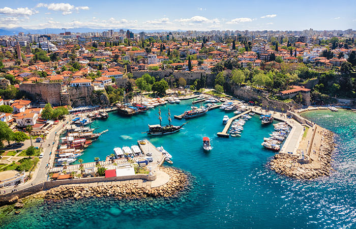
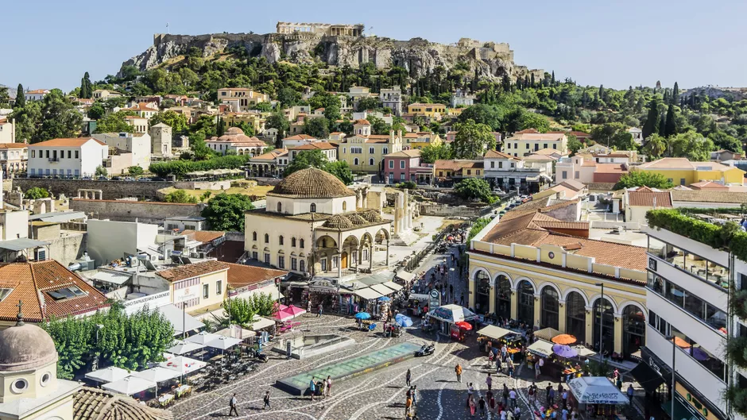
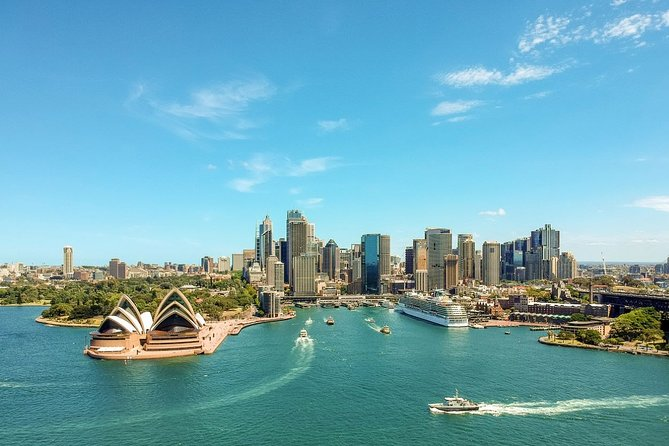

Urlaub in Antalya
Um die Geschichte Antalyas verstehen zu können, bedarf es zunächst einiger Vorabinformationen. Es handelt sich hierbei um eine Metropole innerhalb der türkischen Republik. Aus geographischer Sicht ist sie direkt am Mittelmeer gelegen. Antalya ist ein Teil (bzw. der größte und bekannteste Ort) der Küstenebene im Süden von Kleinasien. Diese Küstenebene wird bereits seit der Antike auch als Pamphylien bezeichnet. Die Herkunft dieser Bezeichnung lässt sich jedoch aus heutiger Sicht nicht mehr eindeutig bestimmen. Die Gegend rund um Antalya bzw. der o. g. Küstenebene wird landläufig auch gerne als „Türkische Riviera“ bezeichnet. Diese Bezeichnung erhielt die Ortschaft im direkten Bezug auf ihre langen und weltweit bekannten Sandstrände. Die Altstadt Antalyas ist an einer steilen Küste gelegen. Antalya verfügt über einen eigenen renommierten Hafen. Dieser ist im Süden der Stadt verortet und grenzt an dem – häufig von Touristen besuchten – Konyaalti-Stand. Die Gegend rund um Pamphylien – zu der wie eingangs beschrieben auch die Metropole Antalya gehört – wurde ca. im zwölften Jahrhundert vor Christus von mykenischen Griechen besiedelt und im Zuge dessen bewohnt. Ionische Griechen organisierten diese Siedlungen bzw. eingerichteten Städte und Kommunen im siebten Jahrhundert vor Christus neu. Die neu organisierten Städte gehörten vorerst zu dem sogenannten Lyderreich. Später hingegen erfolgte eine Zuordnung zum Perserreich. Im Jahre 334 vor Christus erfolgte dann die Eroberung und Besetzung durch Alexander dem Großen. Die eigentliche Gründung der heutigen Stadt Antalya erfolgte gemäß den heute angenommenen Überlieferungen im Jahre 158 / 159 vor Christus durch König Attalos dem Zweiten von Pergamon (Attalos II.). Zunächst lautete die städtische Bezeichnung gemäß des Namens des vorgenannten Königs „Attaleia“. Durch eine Erbschaftsregelung wurde das Reich Attalos ab dem Jahre 133 vor Christus in das Römerreich integriert. Pamphylien spaltete sich in diesem Zuge in eine Vielzahl verschiedener Gruppierungen und Herrschaften. Diese widmeten sich hauptsächlich der Piraterie im Mittelmeerraum. Die vereinzelten Gruppierungen und Herrschaften wurden im Jahre 67 vor Christus durch Pompeius beendet. Wie bereits beschrieben verfügte Antalya auch damals schon über einen großen und bedeutenden Hafen. Im ersten Jahrhundert nach Christus war dieser Hafen vermutlich (der Überlieferung nach) eine Reisestation des Apostels Paulus. Dies spiegelt die biblische Apostelgeschichte 14, 25f. wieder. Ab dem fünften Jahrhundert nach Christus lässt sich innerhalb einer Ortschaft Antalyas auch eine Kirche nachweisen. Hierbei handelt es sich um die heutige „Kesik Minare Camii“. Im Jahre 130 nach Christus erfolgte ein Besuch des Kaisers Hadrian Attaleia. Hieran erinnert bis heute der sogenannte Hadriansbogen. Dieser Bogen ist laut einer heutigen Touristenbeschreibung das einzig noch erhaltene Eingangstor zur antiken Stadt Antalyas (zum Hafen). Die Stadtmauer verlief sowohl links als auch rechts vom eben jenen Hadriansbogen (Hadrianstor). Der Bogen wurde auf vier Sockeln errichtet. Er ist mit insgesamt drei Torbögen und mit diversen Ornamenten und Pfeilern versehen. Aus optischer Sicht erinnert das Tor bzw. der Bogen an die Bauweise des römischen Triumphbogens.
Urlaub in Athen
Die Geschichte der griechischen Hauptstadt Athen ist die längste aller europäischen Städte, sie reicht bis in die Jungsteinzeit, also etwa 7.500 Jahre vor heute zurück. Genauere Details sind aber erst ab etwa 1300 v. Chr. bekannt, als auf der Akropolis (=hohe Stadt) ein mykenischer Königspalast errichtet wurde. Die Herkunft des Namens Athen (griechisch: Αθηναι) ist bisher nicht geklärt, da es keine etymologischen Wurzeln des Begriffs gibt. Man vermutet, dass die Bezeichnung von der Schutzgöttin der Stadt, Athene, abstammt, jedoch ist es genausogut möglich, dass die Göttin nach der Stadt benannt wurde. Der Plural in Athinai erklärt sich dadurch, dass Athen aus mehreren kleinen Dörfern zusammengewachsen ist. Nach der Beseitigung der Tyrannis im Jahre 510 v. Chr., kam es zu einem langsamen Demokratisierungsprozess (siehe Kleisthenes von Athen). Um 500 v. Chr. bestimmten die Perserkriege das Stadtleben, nachdem sich Athen auf der Seite der Rebellen während des Ionischen Aufstands gegen das Perserreich gesetellt hatte. Die wohl bekanntesten Schlachten sind die von Marathon (490 v. Chr.) und von Salamis (480 v. Chr.). Nach der Schlacht von Salamis gelang es den Athenern, ihre Macht auch auf andere Städte auszuweiten und den Attischen Seebund zu gründen (477 v. Chr.). Mit Hilfe des Seebundes errichtete Athen eine Hegemonie über weite Teile Griechenlands und Kleinasiens: Der Seebund selbst entwickelte sich zum attischen Reich und Athen zur stärksten Seemacht. Das 5. Jahrhundert vor Christus war auch vom kulturellen Standpunkt die Hochzeit Athens: Wer als Philosoph, Schriftsteller, Mathematiker oder Künstler etwas auf sich hielt, wohnte in Athen. Gute Beispiele sind die auch heute noch bekannten Schriftsteller Aischylos, Aristophanes, Euripides und Sophokles, die Historiker Herodot, Thukydides, der Philosoph Sokrates, der Dichter Simonides und der Bildhauer Phidias. Athen hatte eine Bevölkerung von ca. 40.000 Einwohner (ganz Attika ca. 300.000 Einwohner) und erstreckte sich auf einem etwa 2×2 km großen Gebiet rund um die Akropolis. Der Hauptplatz – die Agora – befand sich in der Nähe des heutigen Monastirakiplatzes. Im Westen der Stadt befand sich der Pnyx, auf dem die Volksversammlungen abgehalten wurden. Das wichtigste Heiligtum war das Parthenon, in dem die Schutzpatronin der Stadt, Athene, verehrt wurde und dessen Ruinen noch heute sichtbar sind. Weitere wichtige Tempel waren der Hephaistos- und der Zeustempel (oder Olympieion).
Urlaub in Barcelona

Am Mittelmeer, auf dem Plateau zwischen den Flüssen Besòs und Llobregat – dort, wo das heutige Barcelona liegt –, sollen bereits in prähistorischen Zeiten Menschen gewohnt haben. Sie lebten aber wohl eher in kleinen Gruppen an mehreren Orten, statt gemeinsam in einer Siedlung. Das änderte sich, als die Römer etwa 15 vor Christus die Gegend entdeckten und auf dem Hügel Tàber eine Kolonie gründeten. Ein strategisch günstiger Standort; von dort aus ließ sich sowohl das Land als auch das Wasser überblicken. Heute stehen an dem Ort, an dem sich die Römer niederließen, Barcelonas Rathaus und der Palast der katalanischen Regierung. Die Römer nannten ihre Kolonie "Julia Augusta Faventia Paterna Barcino", kurz Barcino, und errichteten eine Mauer um ihre Stadt. Diese musste in den folgenden Jahrhunderten mehrmals erweitert werden, da Barcino schnell wuchs. Archäologische Funde aus der Zeit der Römer sind heute im Museu d'Història de la Ciutat ausgestellt. Nach dem Ende des Römischen Reichs im fünften Jahrhundert wurde Barcelona mehrmals besetzt: erst durch die Westgoten, dann durch die Mauren und später durch die Franken. Letztere ernannten Barcelona Anfang des neunten Jahrhunderts zur Hauptstadt der Spanischen Mark, der südlichsten Provinz des Frankenreichs, das sich im Norden etwa bis zur Elbe erstreckte. Dank der römischen Wehranlagen war Barcelona für die Franken ein idealer Standort, um ihr Reich gegen Spanien zu verteidigen. Unter den Franken wurden Barcelona und das umliegende Land zudem zur Grafschaft ernannt. Der Titel "Graf von Barcelona" wurde zunächst vergeben, später vererbt. Ende des neunten Jahrhunderts schlossen sich die Grafen von Barcelona mit anderen in der Umgebung zusammen und erklärten ihre Unabhängigkeit: Katalonien entstand. Im zwölften Jahrhundert schloss sich die Region dem Königreich Aragonien an, das sich zu diesem Zeitpunkt über weite Teile Nordspaniens erstreckte. Der Zusammenschluss machte Barcelona zu einer bedeutenden Handelsstadt. Durch den wirtschaftlichen Aufschwung wuchs die Bevölkerung so stark, dass sie teils außerhalb der Stadtmauern leben musste.
Urlaub in Sydney
Die Geschichte Sydneys als Strafkolonie wird im als Welterbe gelisteten World Hyde Park Barracks Museum, in der Nähe des Haupteinkaufsbezirks der Stadt, wieder zum Leben erweckt. Rundfahrten wie die Tribal Warrior Cruise im Sydney Harbour sind beliebte Attraktionen, die Einblicke in die interessante Geschichte der Stadt geben. Bei den The Rocks Walking Tours durch den ältesten Teil der Stadt, der vom Sydney Opera House schnell zu Fuß zu erreichen ist, dreht sich alles um die Kolonialzeit. Besuchen Sie das Museum of Sydney und sehen Sie sich Modelle von den Schiffen der First Fleet an. Besuchen Sie in Parramatta Park in Sydneys Westen das Old Government House, in dem 12 Gouverneure der frühen Kolonialzeit lebten. Sydney ist nach Lord Sydney benannt, der im Januar 1788, als Captain Arthur Phillip und die First Fleet eintrafen, britischer Innenminister war. In einem Brief schrieb Phillip über die Kolonie in Sydney Cove, sie habe den „besten Hafen der ganzen Welt“, in dem „tausende von Schiffen sich in absoluter Sicherheit bewegen können“. Die Eingeborenen verbindet eine weitaus längere Geschichte mit dem Hafen, die mindestens 50.000 Jahre vor der Gründung von Sydney Cove als erster australischer Strafkolonie durch Phillip begann. Zu dieser Zeit lebten mehr als 1.500 Aborigines im Küstenvorland. Die Anfangsjahre der Kolonie waren sehr hart. Nach vier Vorgängern und einer militärischen Revolte, die als Rum Rebellion in die Geschichte einging, kam Gouvernour Lachlan Macquarie an die Macht. Er stellte die Ordnung wieder her und legte für NSW, Australiens ersten Staat, eine neue Marschrichtung als freie Gesellschaft fest. Macquarie war ein großer Bauherr und Visionär. Nach ihm wurden Flüsse und Seen, eine Bank, eine Universität und sogar ein Lexikon benannt. Bis in die 1830er Jahre hatte sich Sydney zu einem geschäftigen kommerziellen Seehafen entwickelt, der Wolle nach Europa exportierte. Nach 1840 wurden keine Sträflinge mehr von Großbritannien nach Sydney gebracht. In den 1850er Jahren wurde Sydney vom Goldfieber gepackt. Edward Hammond Hargraves soll im Februar 1851 in der Nähe von Bathurst im ländlichen NSW die ersten gewinnbringenden Goldfelder entdeckt haben. Bis zu den 1870er Jahren hatte sich die Einwohnerzahl Australiens verdreifacht. Sydney hat sich durch die Einwanderung zu einer der weltweit vielfältigsten Städte entwickelt, was die ethnische Herkunft der Einwohner angeht. Mehr als 180 Nationalitäten sind hier zu Hause. Museen und Führungen zum Thema Geschichte und Kultur sowie die State Library of NSW in der Macquarie Street geben Ihnen die Möglichkeit, mehr über die Geschichte von Sydney zu erfahren.